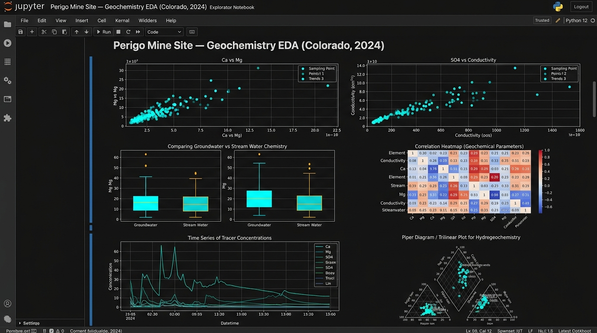
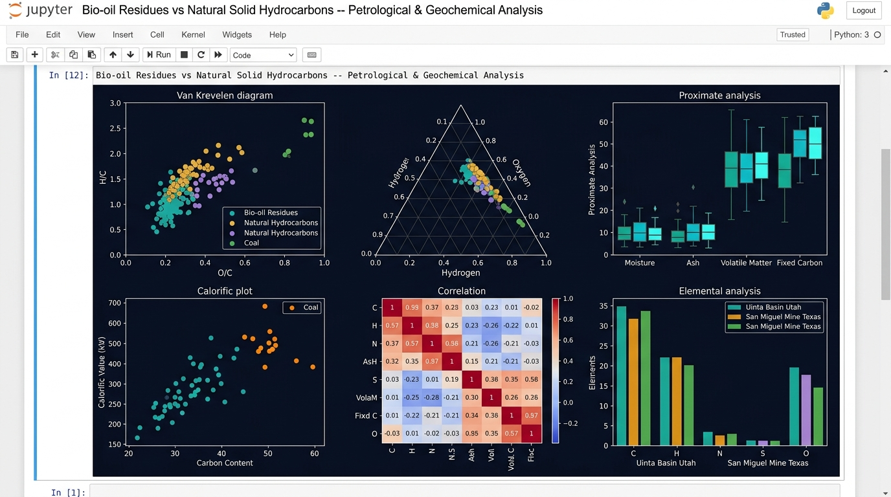
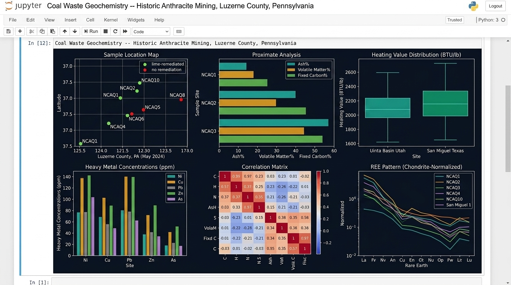

🐍 Jupyter Notebook · Geochemistry EDA
Python scripts, Jupyter Notebooks, and automation workflows that transform raw datasets into scientific insights. Each project combines real-world data with reproducible analysis pipelines.
Project 01 — Geochemical EDA
Jupyter Notebook · Python · Geochemistry & Environmental Tracers · Colorado 2024

Complete Jupyter Notebook with all code, visualizations, and findings — fully reproducible.
An Exploratory Data Analysis of geochemistry and environmental tracer data collected from groundwater and stream water at the Perigo Mine Site, Colorado (2024) — an abandoned mine site with active contaminant transport.
This project investigates groundwater–surface water interactions, contaminant pathways, and hydrological processes using Python, combining geological domain expertise with modern analytical methods.
Notebook Structure
Load and merge 5 structured CSV/Excel files. Handle missing values, standardize units, and validate sample site metadata.
Descriptive statistics (mean, std, range) for all geochemical parameters split by water type: groundwater vs stream water.
Scatter plots (Ca vs Mg, SO4 vs conductivity), box plots, histograms, and time series of tracer concentrations.
Pearson correlation heatmap across all geochemical parameters to identify co-varying species and contamination sources.
Piper diagram (trilinear plot) for water classification, identifying major ion facies and groundwater mixing relationships.
Synthesis of geochemical patterns, identification of contamination pathways, and hydrological process interpretation.
Code Preview
import pandas as pd import matplotlib.pyplot as plt import seaborn as sns # Load and merge datasets water_chem = pd.read_csv('Table2_WaterChemistry.csv') tracers = pd.read_csv('Table3_WaterEnvtTracers.csv') df = water_chem.merge(tracers, on='SampleID') # Correlation heatmap of geochemical parameters fig, ax = plt.subplots(figsize=(12, 9)) corr = df.select_dtypes(include='number').corr() sns.heatmap(corr, annot=True, fmt='.2f', cmap='coolwarm', center=0, ax=ax, linewidths=0.5, square=True) ax.set_title('Correlation Heatmap -- Geochemical Parameters', fontsize=14, fontweight='bold') plt.tight_layout() plt.show()
Key Findings
Distinct chemical signatures between water types, indicative of different recharge sources, flow paths, and subsurface residence times.
Elevated SO4 strongly correlates with conductivity, confirming sulfide mineral oxidation as the primary acid mine drainage pathway.
Ca vs Mg scatter plots reveal carbonate mineral dissolution as a dominant weathering process controlling major ion chemistry at the site.
Tracer data constrains groundwater age and mixing fractions, critical for understanding contaminant transport timescales from mine to stream.
Piper diagram reveals Ca-SO4 and mixed facies water types, consistent with acid mine drainage-influenced groundwater chemistry.
The full workflow from raw CSV data to publication-quality figures is documented in a single Jupyter Notebook for complete reproducibility.
Project 02 — Petrological & Geochemical Analysis
Jupyter Notebook · Python · Petrological & Geochemical Analysis · Utah & Texas, USA

Complete Jupyter Notebook with all petrological and geochemical analysis code, figures, and interpretation.
A comprehensive petrological and geochemical analysis comparing fast pyrolysis bio-oil distillation residues with naturally formed solid fossil fuels — natural solid hydrocarbons and coal — collected from two major US study sites.
This project applies Python data science tools to characterize the elemental composition, proximate analysis, and geochemical properties of organic materials, bridging the gap between bio-energy products and conventional fossil fuel benchmarks.
Notebook Structure
Import petrological and geochemical datasets. Clean, validate, and standardize proximate/ultimate analysis values and elemental composition data.
Plot H/C vs O/C atomic ratios for all sample types to classify organic matter and compare bio-oil residues against natural hydrocarbons and coal benchmarks.
Compare moisture, ash, volatile matter, and fixed carbon content across bio-oil residues, natural solid hydrocarbons, and coal using box plots and bar charts.
Visualize C, H, N, S, O elemental composition differences between Uinta Basin (Utah) and San Miguel Mine (Texas) sample groups using grouped bar charts.
Scatter plot of calorific value vs carbon content to evaluate energy density relationships between bio-oil residues and reference fossil fuel materials.
Correlation heatmap and ternary C-H-O plot to identify geochemical relationships and distinguish the chemical fingerprints of each material class.
Code Preview
import pandas as pd import matplotlib.pyplot as plt # Load geochemical dataset dataset = pd.read_excel('geochemical_data.xlsx') # Compute atomic H/C and O/C ratios for Van Krevelen diagram dataset['H_C'] = (dataset['H_wt'] / 1.008) / (dataset['C_wt'] / 12.011) dataset['O_C'] = (dataset['O_wt'] / 15.999) / (dataset['C_wt'] / 12.011) # Plot Van Krevelen diagram fig, ax = plt.subplots(figsize=(9, 6)) for sample_type, group in dataset.groupby('Sample_Type'): ax.scatter(group['O_C'], group['H_C'], label=sample_type, alpha=0.75, s=60) ax.set_xlabel('O/C Atomic Ratio') ax.set_ylabel('H/C Atomic Ratio') ax.set_title('Van Krevelen Diagram -- Bio-oil vs Natural Solid Fuels') ax.legend() plt.tight_layout() plt.show()
Key Findings
Bio-oil distillation residues occupy a distinct H/C vs O/C region separate from natural solid hydrocarbons, reflecting their unique pyrolysis-derived organic chemistry.
Bio-oil residues show markedly higher volatile matter and lower fixed carbon compared to coal, indicating their thermally labile character and biogenic origin.
Uinta Basin (Utah) and San Miguel Mine (Texas) samples display characteristic elemental differences, reflecting distinct depositional environments and thermal maturity.
Strong positive correlation between carbon content and calorific value across all sample types, validating carbon as the primary energy carrier in both fossil and bio-derived materials.
Surprising chemical similarities between bio-oil residues and natural solid hydrocarbons in C and H content suggest potential for valorization as solid fuel substitutes.
All analyses from raw Excel data to publication-quality scientific figures are captured in a single documented Jupyter Notebook, fully reproducible by any researcher.
Project 03 — Geochemical & Petrographic Analysis
Jupyter Notebook · Python · Geochemical & Petrographic Analysis · Luzerne County, Pennsylvania, USA · 2024

Complete Jupyter Notebook with geochemical analysis, heavy metal screening, REE profiling, and float-sink separation data — fully reproducible.
A comprehensive geochemical and petrographic analysis of coal refuse (culm) samples collected from a historic anthracite coal mining region in Luzerne County, Pennsylvania (2024) — assessing environmental contamination, mineral chemistry, and legacy remediation effectiveness.
This project applies Python to characterize the proximate, ultimate, and geochemical properties of coal waste piles, including heavy metal screening, rare earth element (REE) profiling, and float-sink separation analysis across 9 sample sites with varying remediation histories.
Notebook Structure
Load and merge 4 structured CSV tables (sample metadata, proximate/ultimate analysis, multi-element geochemistry, float-sink data) by Sample ID.
Interactive Folium map of 9 coal refuse sites in Luzerne County, PA, color-coded by remediation status (lime-treated vs untreated).
Compare ash content, volatile matter, fixed carbon, and heating values across sites. Plot CHNS elemental composition and sulfur speciation (pyritic, sulfate, organic).
Analyze Ni, Cu, Pb, Zn, Cd, As concentrations via TD-ICP and INAA. Compare raw vs. sink fractions and assess exceedances vs. regulatory thresholds.
Plot chondrite-normalized REE patterns (La to Lu) from FUS-MS data to characterize the geochemical fingerprint of coal refuse and assess REE enrichment potential.
Evaluate washability data (float at SG 1.60 vs. sink) for ash, volatile matter, sulfur, and heating value — assessing coal recovery potential from waste piles.
Code Preview
import pandas as pd import matplotlib.pyplot as plt import numpy as np # Load and merge geochemical tables meta = pd.read_csv('Table1.csv') prox = pd.read_csv('Table2.csv') geochem = pd.read_csv('Table3.csv') df = meta.merge(prox, on='SampleID').merge(geochem, on='SampleID') # Heavy metal bar chart (Ni, Cu, Pb, Zn, As) metals = ['Ni_TD-ICP_ppm', 'Cu_TD-ICP_ppm', 'Pb_TD-ICP_ppm', 'Zn_TD-ICP_ppm', 'As_INAA_ppm'] raw_ws = df[df['Basis'] == 'ws'].copy() x = np.arange(len(raw_ws)) fig, ax = plt.subplots(figsize=(13, 5)) for i, metal in enumerate(metals): ax.bar(x + i * 0.15, raw_ws[metal], width=0.14, label=metal.split('_')[0]) ax.set_xticks(x + 0.3) ax.set_xticklabels(raw_ws['SampleID'], rotation=45, ha='right') ax.set_ylabel('Concentration (ppm)') ax.set_title('Heavy Metal Concentrations in Coal Refuse -- Luzerne Co., PA') ax.legend() plt.tight_layout() plt.show()
Key Findings
Most samples exceed 60% ash content (dry basis), confirming these are low-grade coal refuse culm piles with limited remaining fuel value but significant mineral matrix.
Pyritic sulfur dominates in untreated sites, signaling active acid mine drainage generation potential; lime-remediated sites show suppressed sulfate mobility and lower sulfur content.
Elevated Ni, Cu, Zn, and As concentrations in sink fractions relative to float material, indicating preferential partitioning of heavy metals into the denser, mineral-rich fraction of the refuse.
Rare earth element concentrations (La, Ce, Nd, Y) in the coal ash fraction suggest potential economic recovery interest, consistent with growing interest in coal waste as a critical minerals source.
Sites with historic lime application (circa 2015) show visibly different geochemical profiles — higher moisture, lower pyritic sulfur — demonstrating measurable remediation effects a decade later.
Float-sink analysis reveals that certain sites (e.g., NCAQ4, NCAQ9) retain a recoverable float fraction with heating values exceeding 10,000 BTU/lb, suggesting economic reprocessing potential for select refuse piles.
Under the Hood
The Python data science tools and methods applied in this project.
Data loading, merging, cleaning, and aggregation across multiple structured CSV and Excel files.
Numerical operations, array manipulations, and statistical calculations on geochemical parameter arrays.
Multi-panel figure layouts, scatter plots, time series, box plots, and hydrogeochemical diagrams.
Correlation heatmaps, statistical distribution plots, and enhanced aesthetic styling for publication quality.
Hydrogeochemical classification of water samples using trilinear plots to identify water type facies.
Summary statistics (mean, median, std, IQR) per water type group for all geochemical parameters.
Pearson correlation matrices to identify co-varying geochemical species and infer mineral weathering processes.
Joining 5 datasets across sample site metadata, water chemistry, and environmental tracers by Sample ID.
Interactive cell-by-cell analysis with inline visualizations, markdown documentation, and reproducible execution.
Let's collaborate on your next Python project!
I am open to data analyst roles, Python projects, and scientific data collaborations.